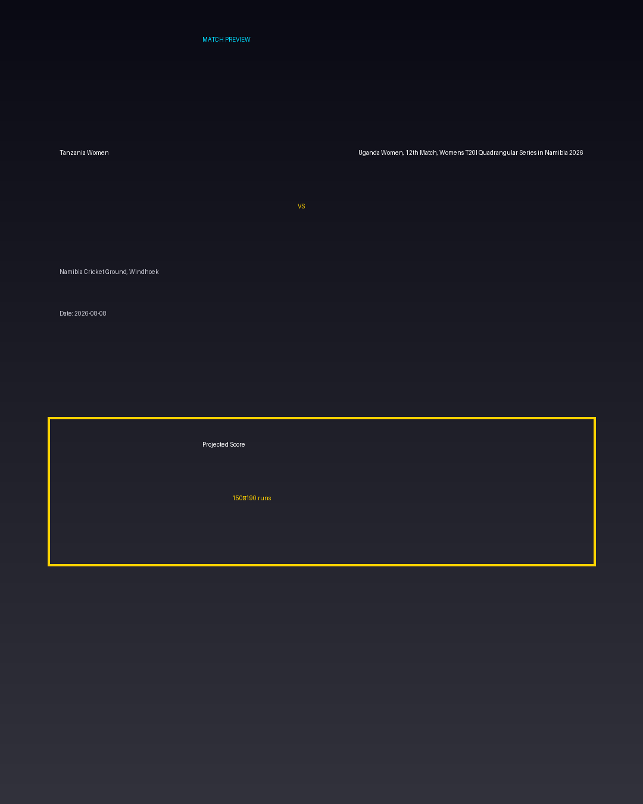

Tanzania Women vs Uganda Women, 12th Match, Womens T20I Quadrangular Series in Namibia 2026
Date: 2026-08-08
Venue: Namibia Cricket Ground, Windhoek


Form Guide
Tanzania Women: 🟩 🟥 🟩 🟩 🟥
Uganda Women, 12th Match, Womens T20I Quadrangular Series in Namibia 2026: 🟥 🟩 🟥 🟥 🟩
Pitch Report
Balanced wicket with moderate scoring conditions.
Projected Score
150–190 runs
Key Players
- Tanzania Women Key Batter — Batsman
- Tanzania Women Strike Bowler — Bowler
- Uganda Women, 12th Match, Womens T20I Quadrangular Series in Namibia 2026 Key Batter — Batsman
- Uganda Women, 12th Match, Womens T20I Quadrangular Series in Namibia 2026 Strike Bowler — Bowler
Advanced Win Probability
Tanzania Women: 64.3%
Uganda Women, 12th Match, Womens T20I Quadrangular Series in Namibia 2026: 35.7%
AI Match Prediction
Based on venue conditions, a projected scoring range of 150–190 runs, recent form (with Tanzania Women appearing slightly stronger), and the pitch profile ('Balanced wicket with moderate scoring conditions.'), this matchup appears to present Tanzania Women entering as clear favorites. Early momentum and top-order execution will likely determine the winner.
